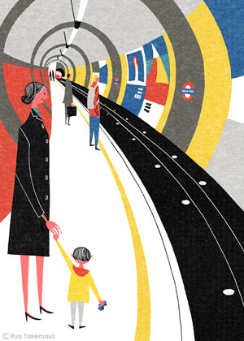
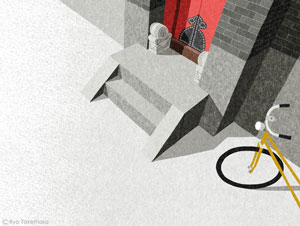

Boring?Coding:!

Kenpo News April 2014 issue

SQUET April 2014 issue

MONOCLE issue 72
- 
TOWN Winter 2013

Quarterly Musashino autumn of 2013 issue

MONOCLE issue 69

Real Simple May 2014

The 65th Book Week

Real Simple May 2014

Quarterly Musashino spring of 2014 issue

MAJESTY express vol. 01

Shitamachi Rocket

Quarterly Musashino winter of 2013 issue
- 
MAINICHI CHUUGOKUGO April 2014